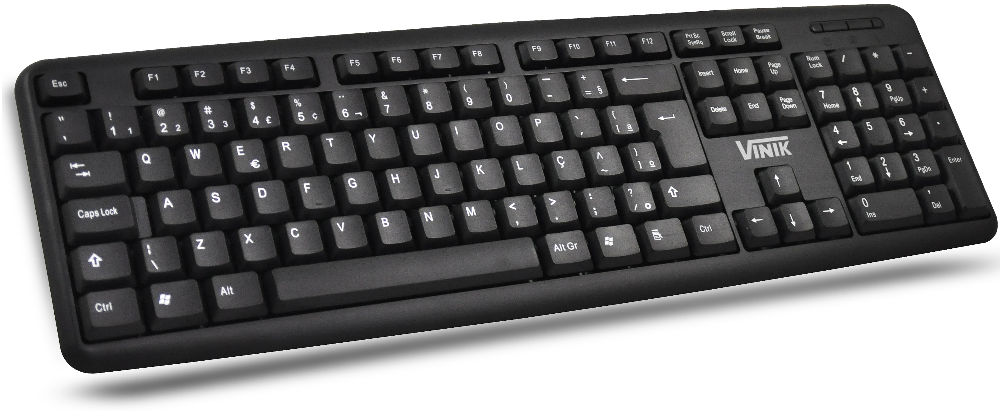
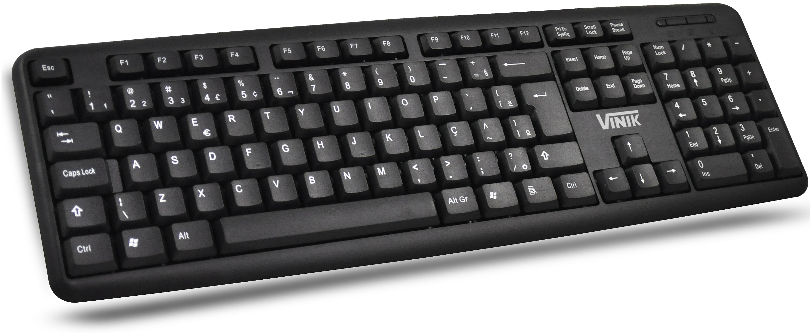

Periféricos Digitais
Periféricos são aparelhos ou placas que enviam ou recebem informações do computador. Na informática, o termo "periférico" aplica-se a qualquer equipamento acessório que seja ligado a um computador. São exemplos de periféricos: impressoras, digitalizadores, leitores e ou gravadores de CDs e DVDs, leitores de cartões e disquetes, mouses, teclados, câmeras de vídeo, entre outros.
Passe o mouse e clique sobre os periféricos da imagem para mais informações: